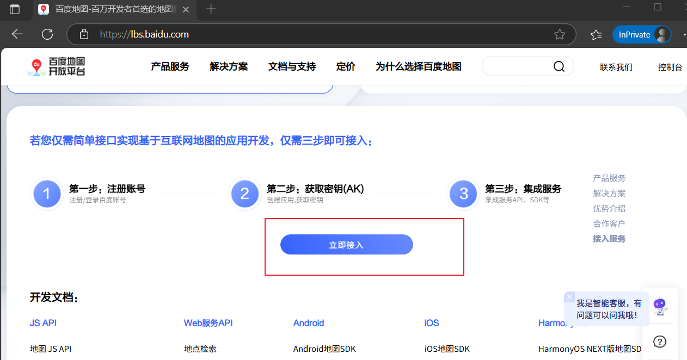
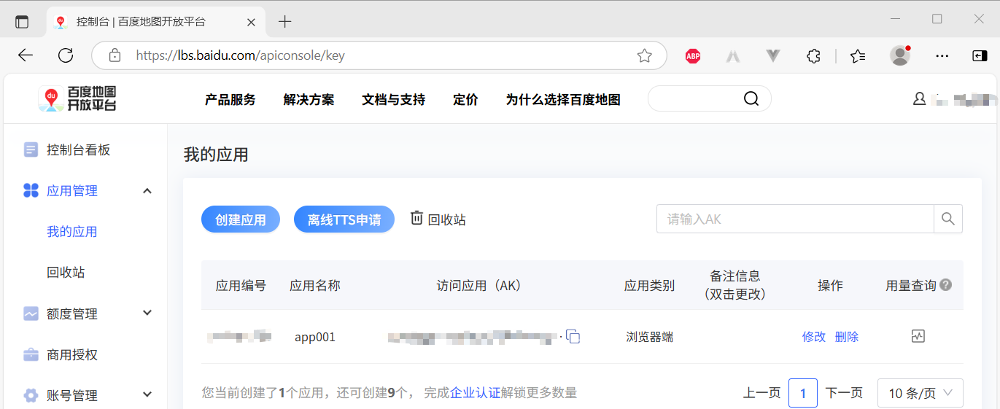

百度地图是……
整个过程还算方便，你可以参考：jspopularGL - 账号和获取密钥 | 百度地图API SDK
你可以在这里注册：百度地图开放平台

注意：上图中的按钮有点远，可能需要多滚一会儿……
你可以注册成为“个人开发者”和“企业开发者”，这里注册的是“个人开发者”
注册成功之后，你就可以进入“控制台”，在“应用管理”中创建应用了

应用创建成功之后，你就可以得到一个AK了
官网：jspopularGL - Hello World | 百度地图API SDK